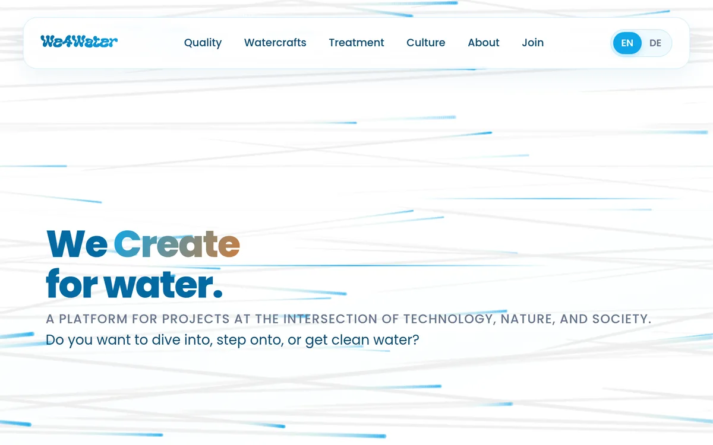
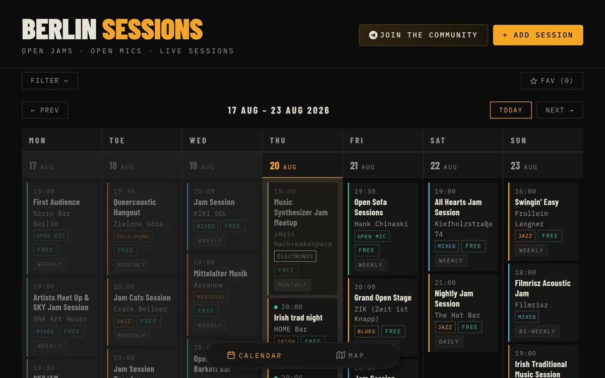
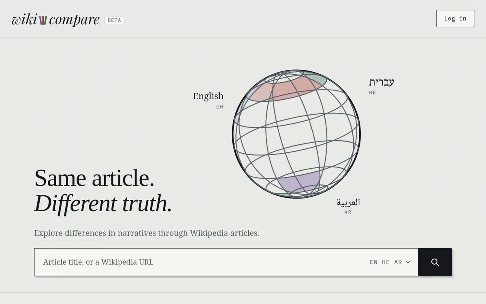

Active projects

we4water
Helping a platform for water projects grow — watercrafts, water treatment, and the culture around them.

Berlin Sessions
Every jam, open mic and live session in Berlin, in one weekly calendar.

Wiki Compare
Same article, different truth — see how Wikipedia tells the same story in English, Hebrew and Arabic.